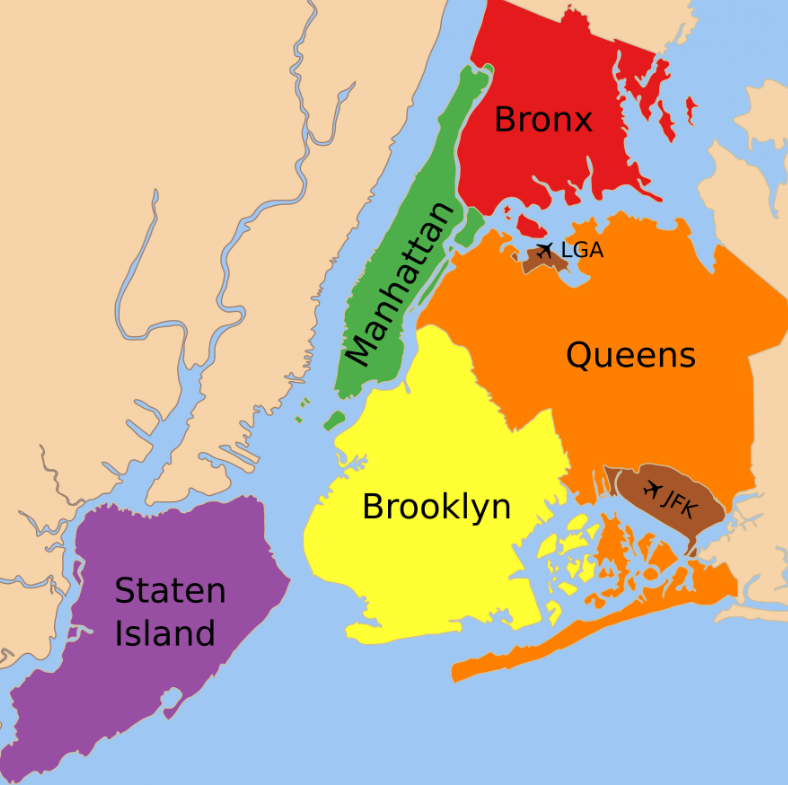

Optimized for minimal zig-zag travel from SpringHill Suites by Marriott New York Queens, with
subway-heavy routing, full days, and budget-friendly food options for 2 teenagers.
Boroughs included: Manhattan, Brooklyn, Queens, Bronx (+ Staten Island ferry)Typical day: 08:00 → 21:30Transit: Subway + occasional bus
Neighborhood colors:Lower ManhattanMidtown South / Midtown NorthUptown ManhattanBrooklynQueensBronxStaten IslandHotel base (Queens)
Transit baseline (from hotel)
Fastest start: walk to Queensboro Plaza / Queens Plaza, then subway.
Backup: short taxi/Uber to the nearest major subway hub if needed.
Inside NYC: use subway for long jumps, walk for same-neighborhood clusters.
Neighborhood coverage plan (6 full sightseeing days)
Mon:Financial District, Tribeca, South Street Seaport + Statue of Liberty & Ellis Island (first full day anchor).
Tue:Chinatown, Little Italy, SoHo, Lower East Side, East Village, Greenwich/West Village.
Wed:Midtown South + Midtown North.
Thu:Upper East Side, Central Park, Upper West Side, Harlem / The Heights.
Fri:Brooklyn + Queens.
Sat: departure-light day or catch-up for any missed highlights.
Day 1 — Arrival + West Side (Hudson Yards/Chelsea/Meatpacking) + Times Square lights
Hotel: SpringHill Suites by Marriott New York Queens, 38-39 9th St, Long Island City, NY 11101
(open in Google Maps).

M
H
Queens base + Midtown South + Midtown North
~13:00 land JFK → clear immigration/bags (typically 60-120 min)
~14:30-15:30 transfer JFK → hotel (public transit: AirTrain JFK to Jamaica, then E to Queens Plaza, then 10-15 min walk/taxi to hotel)
~15:30-16:15 hotel check-in + short reset
16:30–18:45 Hudson Yards → Chelsea → High Line south → Meatpacking (one continuous west-side corridor)
18:45–19:30 Subway to Times Square (save Midtown East/Midtown Core for Wednesday)
19:45–22:00 Times Square / Theater District lights + TKTS booth
20:30+ Optional: Times Square evening + early night (save Broadway for Wednesday)
Mental map: stay on Manhattan's west edge first (Hudson Yards → Chelsea → Meatpacking), then do one clean north-east jump to Times Square for night atmosphere only.
📍 Queens — Long Island City (hotel base)
Long Island City / hotel arrival buffer
must-seeQuick local orientation around the hotel + subway stations
nice-to-seeOptional LIC waterfront sunset if energy allows
could-skipAny long detour before your first Manhattan evening
📍 Midtown South
Chelsea / Hudson Yards / Meatpacking
must-seeHigh Line (Gansevoort St & Washington St, Manhattan)🗺 map§24
must-seeChelsea Market (75 9th Ave, New York, NY 10011)🗺 map§22
nice-to-seeLittle Island (Pier 55, Hudson River Greenway)🗺 map
nice-to-seeBryant Park quick pass only if you're still energetic (full Midtown core day is Wednesday)🗺 map§29
must-seeApple Store Fifth Avenue (767 5th Ave — open 24/7)🗺 map
could-skip🎭 Broadway show tonight (keep show night on Wednesday to avoid neighborhood overlap)
Food (budget, teen-friendly)
Lunch (Chelsea / Hudson Yards)
Los Tacos No.1 — 75 9th Ave, New York, NY 10011
Chelsea Papaya — 171 7th Ave, New York, NY 10011
Los Mariscos — 409 W 15th St, New York, NY 10011
Friedman's — 450 10th Ave, New York, NY 10018
Fuku — 10 Hudson Yards, New York, NY 10001
Alidoro — 105 Hudson St, New York, NY 10013
Dinner (Times Square / Midtown West)
Joe's Pizza — 1435 Broadway, New York, NY 10018
Urban Hawker — 135 W 50th St, New York, NY 10020
Schnipper's — 620 8th Ave, New York, NY 10018
Los Tacos No.1 — 229 W 43rd St, New York, NY 10036
7th Street Burger — 485 7th Ave, New York, NY 10018
Empanada Mama — 763 9th Ave, New York, NY 10019
Day 2 — First full day (Monday): Statue of Liberty + Financial District + Seaport
L
B
Lower Manhattan + Brooklyn
08:00 depart hotel
09:00–12:30 Battery Park / Harbor (Statue of Liberty + Ellis Island ferry, first full-day anchor)
12:30–15:30 Financial District / WTC / Seaport
16:00–21:30 DUMBO / Brooklyn Heights
📍 Lower Manhattan
Battery Park / Harbor
must-seeBattery Park + Castle Clinton §01
must-seeStatue of Liberty + Ellis Island ferry §03
nice-to-seeGovernors Island (if weather/time is great) §02
📍 Lower Manhattan — Financial District
Financial District / WTC
must-seeWalking tour start: National Museum of the American Indian / US Custom House
must-seeFinancial District: Wall Street + NYSE + Charging Bull + Federal Hall + Trinity Church + Bowling Green §04–05
must-see9/11 Memorial + Freedom Tower / Oculus §11
nice-to-seeMuseum of American Finance area + Marine Midland Building + Federal Reserve Bank exterior
nice-to-seeFraunces Tavern + 40 Wall St (Trump Building) + John Street United Methodist Church
nice-to-seeSt. Paul's Chapel + Woolworth Building + City Hall Park
nice-to-seeOne World Observatory (sunset slot only if you skip another observatory)
nice-to-seeTribeca short loop before heading north if energy remains
📍 Brooklyn — DUMBO / Brooklyn Heights
Seaport + Brooklyn Heights / DUMBO
must-seeSouth Street Seaport + Pier 15 / Pier 16 §08
must-seeBrooklyn Bridge walk (golden hour) §09
must-seeDUMBO waterfront + Washington St view §52
must-seeBrooklyn Bridge Park lawns/piers for skyline photos
nice-to-seeBrooklyn Heights Promenade §51
nice-to-seeJane's Carousel + Time Out rooftop if you want a relaxed break
Food
Lunch (FiDi / Seaport)
Pisillo Italian Panini — 97 Nassau St, New York, NY 10038
Xi'an Famous Foods — 8 Liberty Pl, New York, NY 10038
Nish Nush — 88 Reade St, New York, NY 10013
Leo's Bagels — 3 Hanover Sq, New York, NY 10004
Joe's Pizza — 124 Fulton St, New York, NY 10038
Los Tacos No.1 — 136 Church St, New York, NY 10007
Dinner (DUMBO / Brooklyn Heights)
Juliana's Pizza — 19 Old Fulton St, Brooklyn, NY 11201
Time Out Market — 55 Water St, Brooklyn, NY 11201
Front Street Pizza — 80 Front St, Brooklyn, NY 11201
Shake Shack DUMBO — 2 Water St, Brooklyn, NY 11201
Luke's Lobster DUMBO — 11 Water St, Brooklyn, NY 11201
AlMar — 111 Front St, Brooklyn, NY 11201
Day 3 — Lower Manhattan neighborhoods: Chinatown / Little Italy / SoHo / LES / Villages
L
L
Lower Manhattan
08:00 depart hotel
09:00–13:30 SoHo / Nolita / Little Italy / Chinatown
14:00–18:00 Lower East Side / East Village / Bowery
18:00–21:30 Greenwich Village (incl. Washington Square Park) / West Village / Union Square
Mental map: move east-to-west in one sweep: Chinatown/SoHo in the morning, LES/East Village midday, then finish in Greenwich + West Village around sunset.
📍 Lower Manhattan — SoHo / Chinatown
SoHo / Nolita / Little Italy / Chinatown
must-seeChinatown core streets + Doyers St + Mott/Pell §13
nice-to-seeEdward Mooney House (quick exterior stop)
must-seeLittle Italy: Mulberry St + Ferrara Bakery stop §16
Le Grand Comptoir (JFK T4) — JFK Airport Terminal 4, Queens, NY 11430
Google Map (all places) — ready file
I created nyc_google_mymaps_places_sep6_sep12_2026_colored.csv in the same folder.
Import it into Google My Maps
to get one map with all stops.
Open Google My Maps → Create new map.
Click Import on a layer.
Upload the CSV file.
Choose Place as title column and AddressExact for location.
Tip: style markers by RegionGroup for color-coded neighborhoods. I also created a separate restaurants layer file: nyc_google_mymaps_restaurants_sep6_sep12_2026.csv.